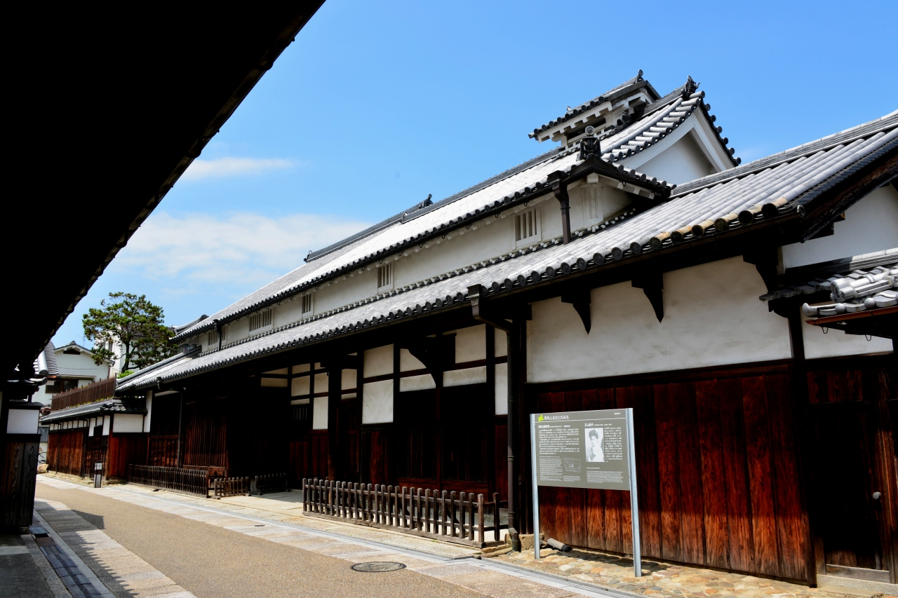
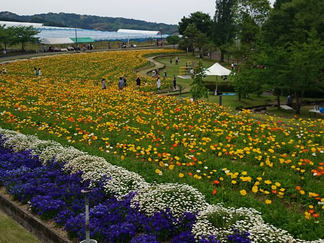
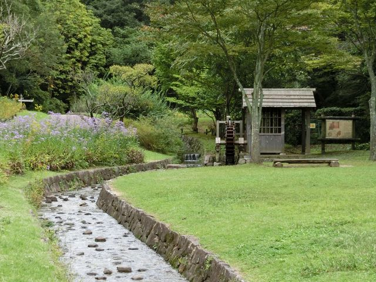

名所の一覧と説明

白壁、板塀、木格子（きごうし）、虫籠窓 （むしこまど）、雨蓋瓦、
煙だしの越屋根
－これらが見事に調和した江戸時代のお寺と商家の町並み。
建築年代が江戸時代中期
から昭和の始めまで少しずつ異なり、それぞれの
町家は個性的な表情を今に伝えてい
ます。大阪府の南東部・南河内に位置
する、富田林（とんだばやし）の旧市街－寺内
町（じないまち）は言わば
｢旧家の生きた博物館｣ です。今度の休日にぶらり散歩で
お訪ねになってみ
ませんか？

広さ20ha・甲子園球場５個分の広大な敷地のサバーファーム。
四季折々に咲き乱れる可憐な花々と、丁寧に育てた旬の果物、野菜たちが
皆さまをお待ちしています。
花の香りに包まれてたっぷり遊んだあとは、
朝摘フルーツのフレッシュジュースや、採れたて野菜を使ったバーベキュ
ーに舌鼓をうつもよし、
広々芝生の上でお弁当を広げるもよし。旬野菜を
使ったお料理やクラフト工作などの体験教室や、収穫祭などのイベントも
開催しています。
お土産はもちろん自分で収穫した果物や野菜たち。
サバーファームは、１年中大地の恵みを実体験できる農業公園です。

富田林市にある錦織（にしこおり）公園は、起伏にとんだ羽曳野丘陵南端
の地形を活かし、豊かな自然と触れ合える憩いの場所として親しまれてい
る。甲子園球場の16倍もの広さのある園内は、大型滑り台やネットクライ
マーがある「やんちゃの里」、童謡のメロディーが流れる「ドレミの小橋」、
茶畑や水車のある農村の風景を再現した「河内の里」などの施設のほか、梅
や桜、つつじなど季節の花々が咲き誇る散策路も充実。
子供からお年寄りまで楽しめ、「大阪みどりの百選」にも選ばれている。
季節ごとの「自然ふれあい教室」などのイベントも。